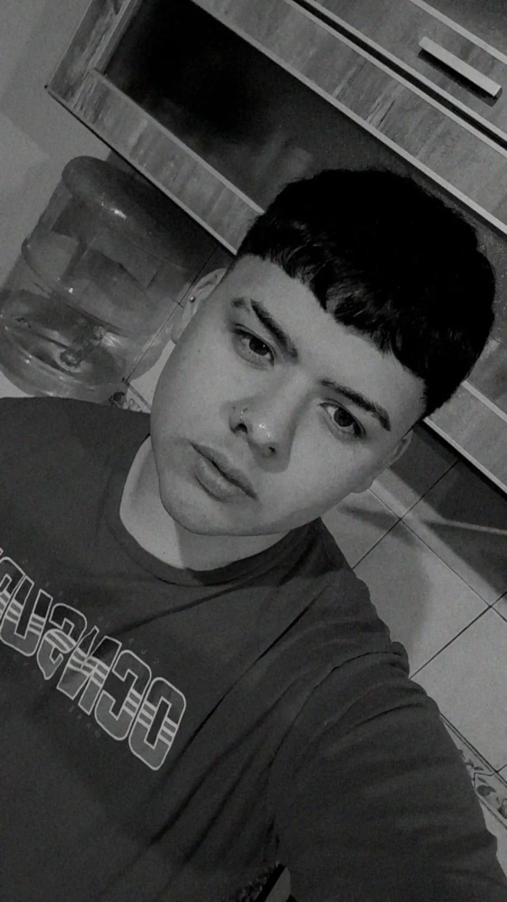

Alejo Bresso
Tengo 16 años, nací el 23 de mayo de 2007. Me gusta ir al gym, los autos,
Bardero$ y me gustaría ser licenciado en
seguridad e higiene.

Bautista Diaz
Tengo 17 años, nací el 3 de julio de 2006. Me gusta el arte, hacer crossfit, la música:
Ciro y Los Persas y me gustaría dedicarme a las
bellas artes.
Carolina Aleon
Tengo 16 años, cumplo el 19 de enero y soy de capricornio. Me gusta la música, el esoterismo, el fútbol y en unos años me gustaría entrar a la fuerza aérea como
piloto de caza. Mi influencia como piloto de caza es
Matti Dilewski.